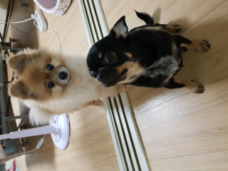
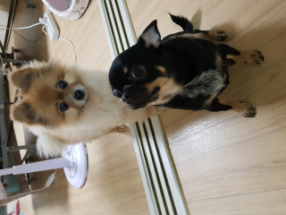
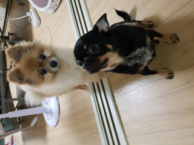

88%
오후 08:33
MainPage
외할머니댁에 가는길에 들린 담양 죽녹원에서...
fkfkfk9 |
조회수 100 |
2주일 전

새로 구입한 차량을 인수 받은 후에 썬팅시공소에서...
보배 |
조회수 500 |
1달 전
수술 후에 깁스하고 앉아있는데 밤톨이가...
밤톨 |
조회수 7 |
2년 전
9+
 외할머니댁에 가는길에 들린 담양 죽녹원에서... fkfkfk9 | 조회수 100 | 2주일 전
외할머니댁에 가는길에 들린 담양 죽녹원에서... fkfkfk9 | 조회수 100 | 2주일 전 새로 구입한 차량을 인수 받은 후에 썬팅시공소에서... 보배 | 조회수 500 | 1달 전
새로 구입한 차량을 인수 받은 후에 썬팅시공소에서... 보배 | 조회수 500 | 1달 전 수술 후에 깁스하고 앉아있는데 밤톨이가... 밤톨 | 조회수 7 | 2년 전
수술 후에 깁스하고 앉아있는데 밤톨이가... 밤톨 | 조회수 7 | 2년 전